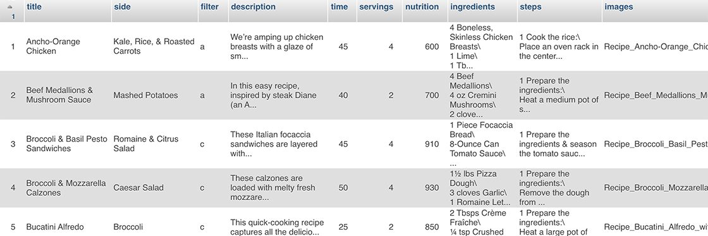

CASE STUDY
OVERVIEW
In a timeline of roughly nine weeks, I was challenged with designing and developing a recipe database website using HTML, CSS, JavaScript and PHP for "IDM 232: Scripting for Interactive Digital Media II" at Drexel University. The final product is a dynamic, responsive recipe cookbook containing a database of 40 recipes while includes nutrition information, cook times, serving sizes, ingredients, steps, and images.
CONTEXT & CHALLENGE
This project was focused around implementing PHP and using MAMP (Macintosh-based local server enviroment) to produce a website for of 40 recipes. All of the recipe components were compiled in a .zip file and this asset folder included necessary information to fill the content of the HTML webpages:
- 40 .pdf's containing all of the recipe information
- 40 folders of miscellaneous images containing .jpg and .png files
This asset folder was distributed at the beginning of the class to be organized into an .xlsx (Microsoft Excel) file, which would then be imported into phpMyAdmin to handle the administration of MySQL over the Web.
The purpose of this project was to learn the basics of PHP and to understand how to create, update and maintain databases for MySQL.
 myPHPAdmin Database screenshotPROCESS
After going through all of the assets, I decided that a grid layout would work best for this project. It would provide the most visual appeal for a large collection of images and provide the most ease if there was ever a need to update the database with more recipes.
PROCESS: IMAGES
 Home Page Sketch (left: Desktop, right: Mobile)
Home Page Final (left: Desktop, right: Mobile)
Result Page Sketch (left: Desktop, right: Mobile)
Result Page Final (left: Desktop, right: Mobile)
Home Page Sketch (left: Desktop, right: Mobile)
Home Page Final (left: Desktop, right: Mobile)
Result Page Sketch (left: Desktop, right: Mobile)
Result Page Final (left: Desktop, right: Mobile)
PROCESS (CONT.)
Next, I designed the logo for the site and decided on the fonts, colors, and form/button styles that would appear across the webpages.
Style TileA requirement for this project was to incorporate some sort of help page. In order to reduce the amount of navigation on the site, I decided to add a Modal (dialog box/popup window) that provided information on how to navigate and use the site.
Help Modal Box (left: Home Page, right: Result Page)Another requirement was to have a filter system. I intergrated this feature into the navigation menu by adding 3 buttons for categories of recipes (Meat, Fish, and Vegetarian), as well as a search bar to filter results based on keywords inputted by the user.
Navigation Menu (left: Desktop, right: Mobile)SOLUTION
The goal of this website was to create a fluid, simple digital recipe cookbook with the intent of adding more content in the future. The basic grid structure of the site allows for this to be a possibility.
RESULTS
While my final site demonstrates the use of HTML, CSS, and JavaScript for its overall design and appearance, the primary focus was to learn how to implement PHP into these languages and build my knowledge around its usage.
You can visit the live version of the final project below:
The Wooden Spoon